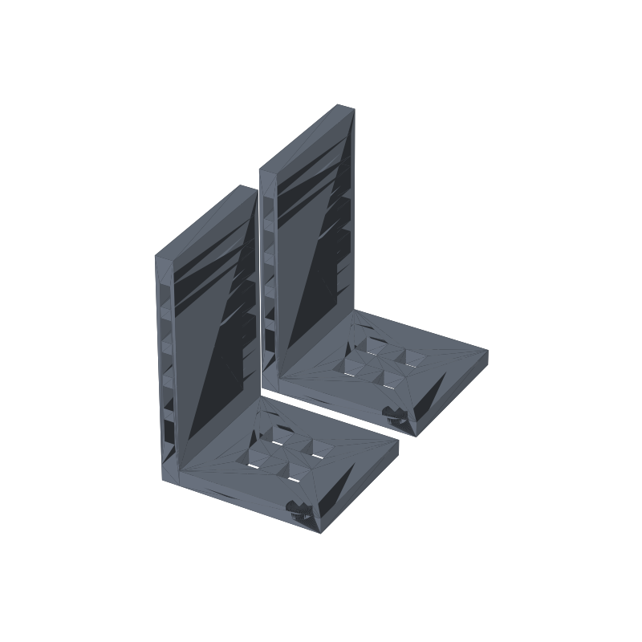

L bookend pair STL, non-slip base and lattice cutouts
Useful bookends tend to be heavy: stamped steel or filled plastic that costs more than the shelf. This pair prints from one file. Two L brackets, foot down, wall up, set them on the shelf and lean the row against the walls. The foot carries the lean, the wall takes the shove, and one print gives you both ends of the row.
The failure mode for printed bookends is skating: a hard PLA foot on a laminate shelf slides the moment the row gets shoved sideways. Four blind pockets in the underside of each foot fix that. Press in standard 10 mm rubber or foam bumper dots, or fill them with a bead of hot glue, and the pair grips the shelf. The lattice cuts, a 2 × 2 grid of windows through each foot and a column of five slots up each wall, trim the pair from about 148 cm³ solid to 114, and every cut is a through-hole, so the print needs no supports and no bridging.
This page carries the measured spec sheet: dimensions taken from the mesh, the cutout positions ray-tested against the export, and preview renders, so you can check the numbers before you slice.

The STL is one material and prints in one color; the renders shade the walls by light angle so the slots, windows and pockets read as geometry, not paint.
Spec sheet, measured from the mesh
| Spec | Value |
|---|---|
| As exported | Two identical L bookends in one file, side by side on the bed: 70 × 134 × 100 mm pair footprint, each bookend 70 × 60 × 100 mm |
| Foot | 7 mm thick, 70 mm deep, 60 mm wide along the shelf; the book row sits on it and leans on the wall |
| Wall | 8 mm thick, 100 mm tall at one edge of the foot; stops the row and takes the sideways shove |
| Bumper pockets | Four blind pockets Ø10 × 2.5 mm per foot, open on the bed face, for 10 mm rubber or foam dots or a hot-glue bead |
| Foot windows | 2 × 2 grid of 10 × 10 mm through-holes per foot, 8 mm bars between, grid anchored 15 mm clear of the wall so the foot perimeter stays solid |
| Wall slots | Five 4.5 × 10 mm through-slots per wall, 5 mm bars between; the column runs z 18.5 to 88.5 mm with 11.5 mm of solid wall above the foot and 11.5 mm at the top |
| Solid option | LATTICE = False in the generator keeps the pockets and drops the windows and slots for a plain solid L |
| Volume | 56.96 cm³ per bookend, 113.91 cm³ the pair, about 141 g of PLA if printed solid; a solid L pair would be about 148 cm³, so the cutouts trim roughly 34 cm³ |
| Print time | About 6-8 hours for the pair, PLA, 0.4 nozzle, 0.2 mm layers; a geometry estimate, not a measured print |
| Mesh check | Watertight, winding consistent, euler -16 per bookend (-32 for the pair, 9 through-holes), 984 faces per body; the 3MF carries two named solid bodies (trimesh 5.1.0, 2026-09-10) |
| Files | STL (98 KB) and 3MF (22 KB) plus the parametric generator script |
| License | CC-BY 4.0 on the MakerWorld upload; royalty free, no AI training, direct from us |
How the cutouts were verified
The cutout numbers came off the exported mesh, not the parameter sheet. Ray-parity tests through the solid checked every feature both ways: points at the center of each wall slot are open air with the 5 mm bars between them solid, window centers are air at bed level and 6 mm up with all three bars between them solid, and each bumper pocket reads air at 0.8 mm deep with a solid ceiling at 3.5 mm, which pins the pocket depth at 2.5 mm. The slot column measured off the wall centerline runs z 18.5 to 88.5 mm, five 10 mm slots on 5 mm bars, matching the generator rectangles exactly.
What the layout means on the shelf: the window grid sits 15 mm clear of the wall junction, so the foot keeps a solid frame around every window and the row never rests over a hole. The slot column leaves 11.5 mm of solid wall between the foot and the first slot and 11.5 mm at the top, so the wall reads as a column of windows, not a row of cracks. The analytic volume check lands at 56.95 cm³ per bookend against 56.96 cm³ measured from the mesh, a rounding-level match.
Every wall in this part is vertical and every surface is either flat on the plate or a vertical extrusion, so nothing needs supports and there are no bridges. The only 3D features are the pockets, which open on the bed face, so even a sloppy first layer does not capture anything.
Print notes
Print the file as exported, flat on the plate. The slicer shows two objects, the pair prints in one pass, and no supports or brim beyond plate adhesion are needed. 0.2 mm layers and three perimeters are a reasonable default; the 7 mm foot is thick enough that a solid base layer is standard. Wall slots and windows both print clean because every one of them goes all the way through in the vertical direction.
I have not test-printed this one yet. If you print it, post a make and tell me how the pockets took your bumper dots. The knobs are in the generator: LATTICE = False for a solid L, WIN for the window size, SLOT_N for the slot count, and the POCKETS list for dot positions. Bumper dots first: the pockets are cut for nominal 10 mm dots, and a dot 0.5 mm over needs a firm push or a trimmed edge.
The generator (gen_bookend29.py) takes wall height, foot depth, bookend width, foot and wall thickness, the window grid and size, slot count, and pocket positions as parameters. Taller walls, deeper feet and thicker sections all recompute, so a heavier row is a number change, not a redesign.
Honest limits
The 6-8 hour figure is a geometry estimate from the mesh, not a timed print, and the lattice layout is mesh-verified but untested on a printer. The fit risks are ordinary: a first layer that squashes 0.2 mm shrinks the pockets by the same amount, so oversized dots bind. If a pocket runs tight, one pass of a deburring blade on the rim, or the tape wrap, fixes it; the solid L option is one parameter away if the windows or slots bother you.
PLA is fine for a bookend that lives on an indoor shelf, but a windowsill in summer or a shelf above a radiator can creep it. For a hot room, print the same generator output in PETG. For a genuinely heavy row, bump the foot thickness T a few millimeters so the 70 mm span does not flex.
The bumper pockets take dots that actually measure close to 10 mm. Fat felt pads and screw-on rubber feet are a different size; the POCKETS list and pocket radius are parameters, so measure what you have and cut for it.
Where to get the files
The bookend pair is staged on our MakerWorld account and goes public on our profile once it is submitted and clears review; a CGTrader listing follows when that store account activates.
More printed organizers and bench tools, with a status table for the pool: 3D printed desk organizers and printable tools. The rebuild-everything approach, generator parameters per model side by side: parametric 3D printed tools.
Compare all 20 models by solid mesh volume in the STL volume ledger.
FAQ
Why two bookends in one file?
Because a bookend is useless alone and nobody buys one. The two brackets are identical, so one print gives you the pair: set them 300 mm apart or 800 mm apart depending on the row, and the walls take the lean at both ends. A lost or broken half is a reprint of the same file.
Do they slide on the shelf?
Not with the pockets filled. Bare PLA on laminate slides once the row gets shoved, so the four blind pockets under each foot take standard 10 mm rubber or foam bumper dots, or a bead of hot glue. Once the dots grip and the weight of the row presses the foot down, the pair stays put; the wall is what stops the books, and it is 8 mm of solid plastic.
Can I resize them for a taller shelf or heavier books?
Yes, that is what the generator is for. Wall height H should reach near the top of the books you lean on it, foot depth W sets how much lean the foot can catch, and width D is just shelf frontage. Heavier rows want a thicker foot (T) and the solid L option. The windows, slots and pockets recompute their layout around whatever footprint you pick.